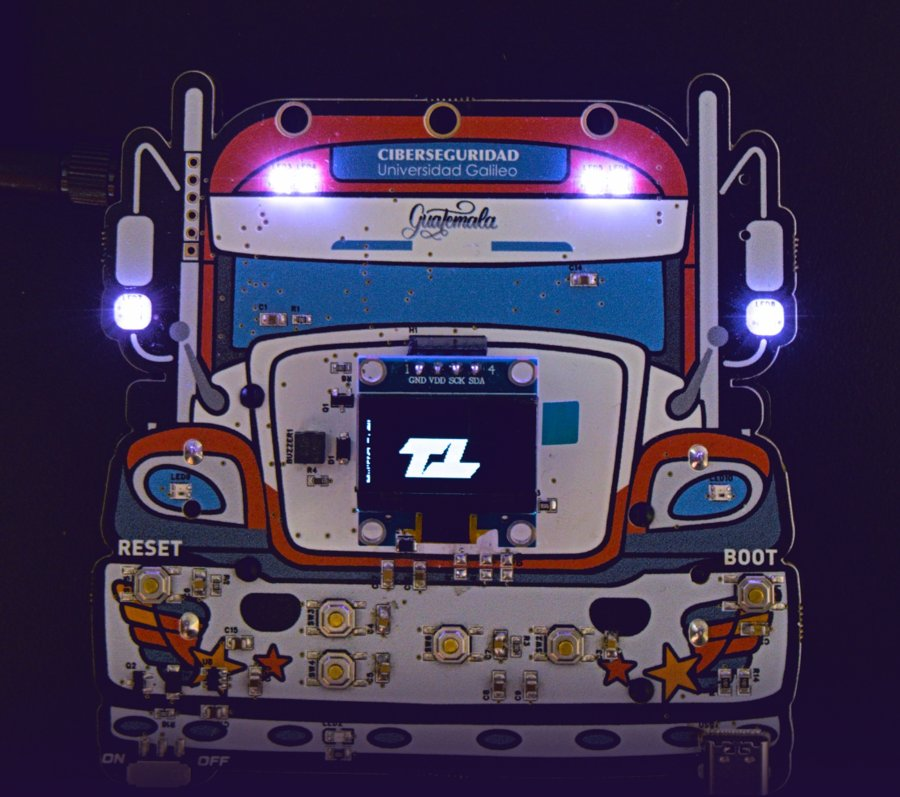

Minino Reforjado
Dispositivo educativo de seguridad WiFi y Bluetooth con ESP32-C6. Pantalla OLED, botones, NeoPixels y lector SD. Funciona sin PC ni internet. Hardware rehecho y firmware propio.
Estudiante de Ingeniería Mecatrónica y programador de sistemas embebidos en Tesla Lab, Universidad Galileo.
Soy estudiante de Ingeniería Mecatrónica y programador de sistemas embebidos en Tesla Lab, Universidad Galileo, en Guatemala. Trabajo con ESP32, STM32, Verilog y FPGA, en C, C++, Python y LabVIEW.
Estoy certificado en SolidWorks e Inventor a nivel asociado. Me gusta trabajar en Linux, conozco de forma básica el flujo de Synopsys, Yosys y cocotb, y disfruto hacer aplicaciones propias para mis sistemas embebidos.

Dispositivo educativo de seguridad WiFi y Bluetooth con ESP32-C6. Pantalla OLED, botones, NeoPixels y lector SD. Funciona sin PC ni internet. Hardware rehecho y firmware propio.
Microcontrolador de 8 bits inspirado en RISC-V, escrito en Verilog para la FPGA Tang Nano 9K. Tiene su propio conjunto de instrucciones, periféricos mapeados en memoria y ensamblador, además de un IDE propio hecho en PyQt5.
Biblioteca para usar un ESP32, Arduino o STM32 como instrumento de laboratorio desde LabVIEW, pensada para enseñar instrumentación virtual de bajo costo. Se usa en un curso universitario.
Diseños propios enviados al shuttle TTSKY26d, entre ellos un proyecto VGA que dibuja un logo de 64x64 en Verilog y una herramienta que convierte imágenes en ROM. También soy TA voluntario del workshop en Guatemala.
Deck táctil sobre la pantalla WT32-SC01-Plus con ESP32-S3. Menú principal con submenús de macros en rejilla 3x3, pantalla de reposo con reloj y notificaciones, Pomodoro y reloj con alarmas.